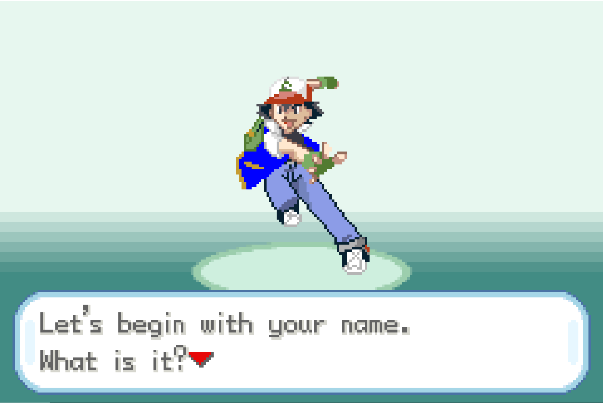
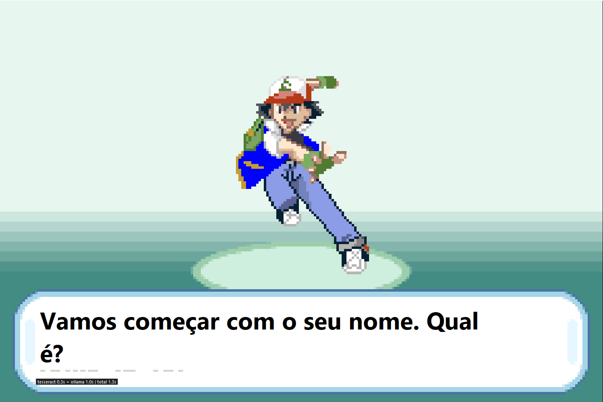

original
traduzidoTradutor OCR + LLM
Traduz a tela de jogos em tempo real: captura a área escolhida, lê o texto com OCR (Tesseract) e usa um LLM local (Ollama) para corrigir e traduzir. Passe o mouse (ou arraste) na imagem para comparar o antes e o depois.